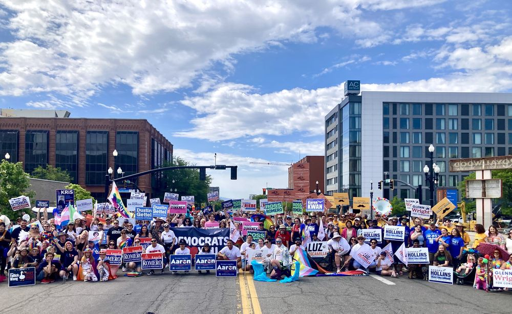
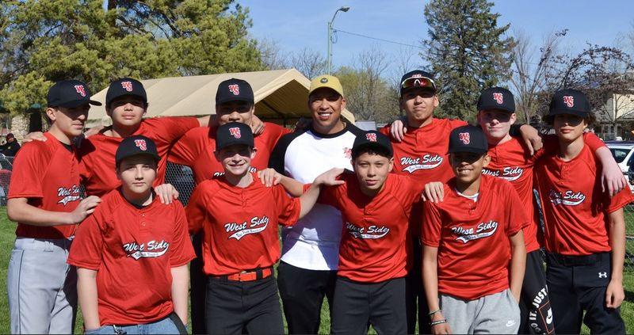
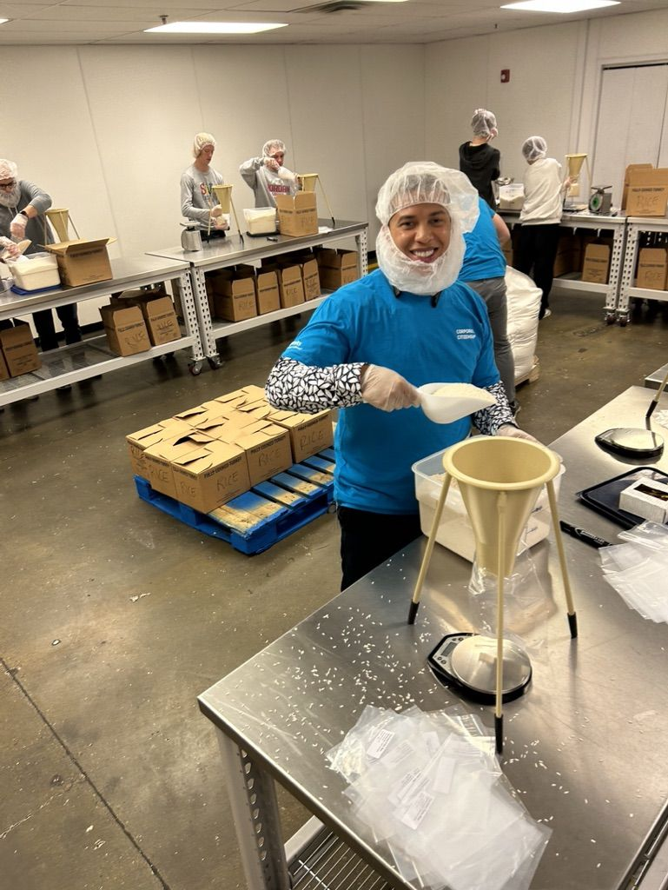
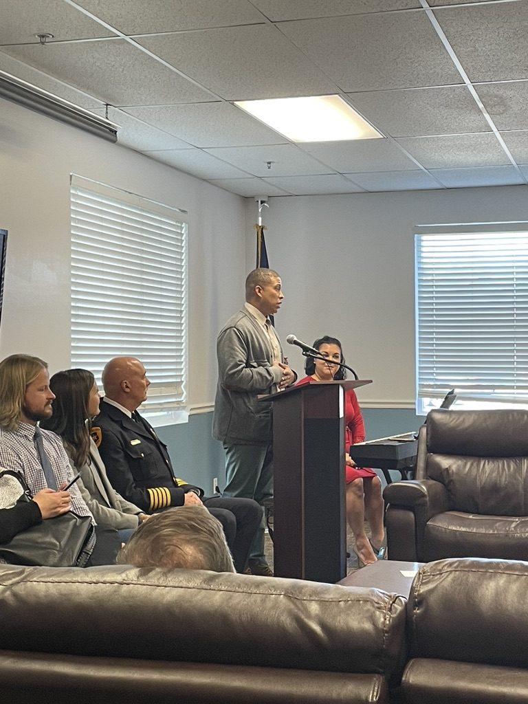
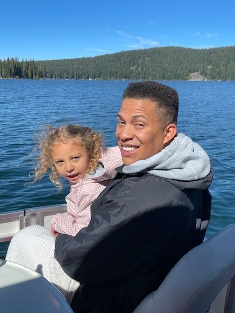
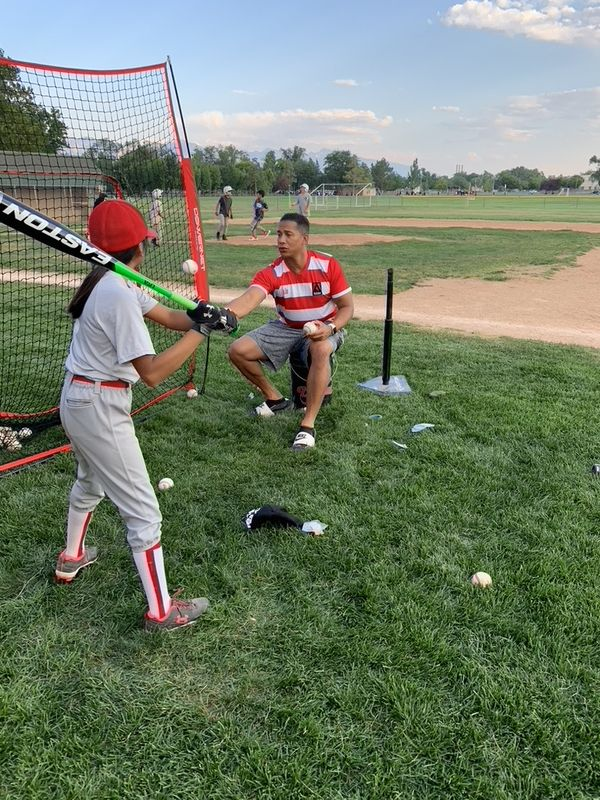
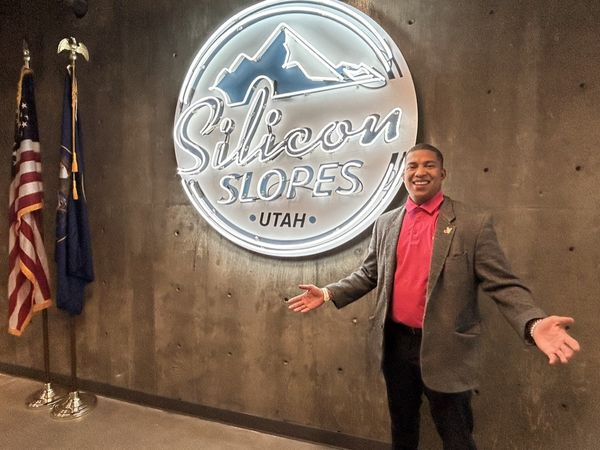

WE ARE 21 WE ARE HERE
For too long the West Side has been overlooked. Not anymore.
The West Side
Has Always Been Here.
We are the families raising our kids under winter inversion skies — wondering what's in the air they breathe.
We are the neighbors who organized when corporations tried to poison our communities. We are the communities who fought back when toxic waste was burned near our homes.
We are renters watching the neighborhoods we built become too expensive to stay in.
We are elders and people with disabilities who feel forgotten by decision-makers hundreds of miles away.
We are small business owners opening our doors before sunrise. We are teachers, coaches, parents, and dreamers.
We are the heart of Salt Lake City.
But for too long, the people in power treated the West Side like it didn't matter. Our communities were split apart by gerrymandering. Our local voices were stripped away by state politicians who think they know better than the people who live here.
They thought we wouldn't notice. They thought we wouldn't organize. They thought we wouldn't fight back.
They were wrong.
District 21 is rising. Neighbors are mobilizing. And together, we're building the voice the West Side has always deserved.
Aaron Wiley is stepping forward — not to speak for the community, but to stand with it.
We are organizing. We are mobilizing. We are 21.
And we are just getting started.




I've Seen What Happens When Nobody Speaks Up.
I grew up on the east side of Salt Lake — one of the only Black, Chicano, Buddhist kids in my school.
My parents sat me down early and told me something I've never forgotten:
When you see something wrong, you speak up. With grace. With courage. Every time.
I've carried that lesson my whole life. In college, I started organizing — led the Black Student Union, worked with MEChA, and worked on Barack Obama's first presidential campaign. That's where I learned how power actually works — and how communities build it.
Later, I moved to the West Side. Started a family. Coached kids. Put down roots.
And then Stericycle happened.
A hazardous medical waste facility was operating near our neighborhoods. Most people didn't even know what was being released into our air. So we organized. Neighbors. Parents. Legislators. Community leaders. We refused to stay quiet. And eventually, Utah had to change.
The West Side doesn't lack power. It lacks representation.
I'm not a career politician. I'm a dad, a coach, a tech founder, and someone who has been part of this community for decades. I'm running because my neighbors deserve someone who fights for them the same way I fight for the kids I coach — with heart, with discipline, and with everything I've got.
We are District 21. And I'm all in.
The Person Behind The Campaign.
Aaron Wiley isn't a career politician. He's a father, a coach, a builder, and someone who believes the West Side deserves a stronger voice.
Father first. Aaron has raised four kids here in our community. Two graduated from West High, one is currently enrolled, and his youngest is preparing to attend SLARTS. Like many parents on the West Side, his life revolves around supporting his kids, their schools, and the future they deserve.
A coach and mentor. For more than 20 years Aaron has coached youth sports across the West Side — baseball, basketball, football, and soccer. He helps young people build confidence, teamwork, and leadership both on and off the field.
A community advocate. Aaron serves on the PNUT Board and was on the front lines of the Stericycle fight that brought national attention to pollution affecting local families. What started as a local concern grew into a statewide conversation about environmental accountability.
A builder and problem solver. After studying Political Science at the University of Utah, Aaron built his career in technology — working in some of the early SaaS companies and now building platforms that help founders and business owners grow their companies.
A lifelong leader. At the University of Utah, Aaron served as President of the Black Student Union, was active in MEChA, and served as the first paid employee and campaign director during President Obama's campaign in Utah.
I'm not running away from something. I'm running toward something — a West Side that finally has a seat at the table. And I'm not afraid to stand up to anyone who tries to silence our community.



Fighting for the Future of District 21.
I'm running because the West Side deserves more than promises — we deserve results. These are the priorities I'll take with me to the Capitol.
Housing & Cost of Living
The dream of owning or even renting a home is slipping out of reach for too many families. We need smart solutions that keep our neighborhoods strong.
- Increasing attainable housing options
- Protecting renters and first-time buyers
- Responsible development that serves communities
- Making sure growth works for residents already here
Clean Air & Healthy Communities
Every family deserves clean air. Too many West Side communities have carried the burden of pollution for decades — from winter inversions to industrial emissions.
- Stronger environmental protections
- Accountability for polluters
- Investment in clean energy and transportation
- Protecting our air, water, and Great Salt Lake
Fair Representation & Local Voice
Utah voters approved reforms to protect fair representation — but those protections have been weakened. Government should reflect the will of the people.
- Fair district maps
- Respect for voter initiatives
- Protecting local decision-making
- Every community has a voice
Opportunity for the Next Generation
As a father of four and a coach for 20+ years, I've seen the power of strong schools and community support. Our kids deserve every opportunity.
- Strengthen public education
- Support student mental health services
- Invest in career pathways and workforce training
- Expand opportunities for young people
THIS IS WHERE WE DECIDE.
Caucus Night was the first step. Now delegates from District 21 gather at the County Convention to vote Aaron onto the ballot. Here's exactly how it works — and how you can still be part of it.
DELEGATES REPRESENT
Every delegate elected on March 17 from District 21 precincts shows up at Highland High School on April 11 to cast their vote.
CANDIDATES SPEAK
At 1:40 PM, District 21 breaks into its own room. Aaron addresses delegates directly — no filters, no machines. Just neighbors.
DELEGATES VOTE
Delegates cast ballots. If one candidate gets 60% or more, they go straight to the general. Under 60%? Top two go to a primary.
WEST SIDE WINS
With enough support on April 11, Aaron is on the ballot and District 21 finally has a real voice at the Utah State Legislature.
THE FULL PICTURE.
What actually happens that day — so you know exactly what to expect.
In-person check-in at Highland High School. No pre-registration needed — just show up as a delegate. Can't make it? Virtual ballots open at 8:00 AM online, deadline 11:30 AM.
Issue and identity caucuses meet. Great time to connect, learn, and build relationships before the vote.
Take a breath. Eat something. Talk to delegates from other districts. This is movement-building time.
The official SL County Democratic Convention begins. Uncontested races are voted on at 1:00 PM.
This is our moment. District 21 delegates move to their breakout room. Candidates speak. Aaron speaks directly to the people who represent our neighborhood.
All State House and Senate contested races go to ballot. This is where delegates decide who represents District 21.
Election results announced and Convention adjourns. District 21 finds out what comes next.
FUEL DISTRICT 21.
Every dollar goes directly to reaching voters across Rose Park, Glendale, and the West Side. No PAC. No machine. Just neighbors helping neighbors win.
Paid for by Aaron Wiley for House District 21. Utah law requires name, address, employer & occupation for contributions over $50. Contributions are not tax-deductible.
WEST SIDE NEEDS YOU.
Pick your lane. Every role matters between now and April 11.
KNOCK DOORS
Walk precincts with the team. Talk to neighbors. Make District 21 impossible to ignore.
MAKE CALLS
Phone bank from home. Reach delegates and neighbors across the district.
SOCIAL MEDIA
Share content, write posts, and help District 21 go loud. Amplify the West Side voice online.
ADMIN SUPPORT
Data entry, outreach lists, scheduling, logistics. The behind-the-scenes work that wins campaigns.
WORK CONVENTION
Be on the ground April 11 at Highland High. Move delegates, hold signs, represent Rose Park.
SIGN ME UP
Ready to help? Jump in. We'll match you to where you're needed most before April 11.
Join Team Wiley.
District 21 wins when we show up together. Tell us how you want to help — and we'll be in touch personally.
-
Become a Delegate The single most powerful thing you can do right now. Show up March 17 and vote for Aaron at convention.
-
Volunteer Knock doors, make calls, show up at events. We need people on the ground.
-
Spread the Word Share this site. Tell your neighbors. The West Side mobilizes when we talk to each other.
-
Get a Yard Sign Show your neighborhood where you stand.
Already committed? Create your volunteer account to access the outreach tool.
Create Volunteer Account →You're In!
Thank you for joining Team Wiley.
We'll be in touch soon — see you on March 17.
We Are 21. We Are Here.